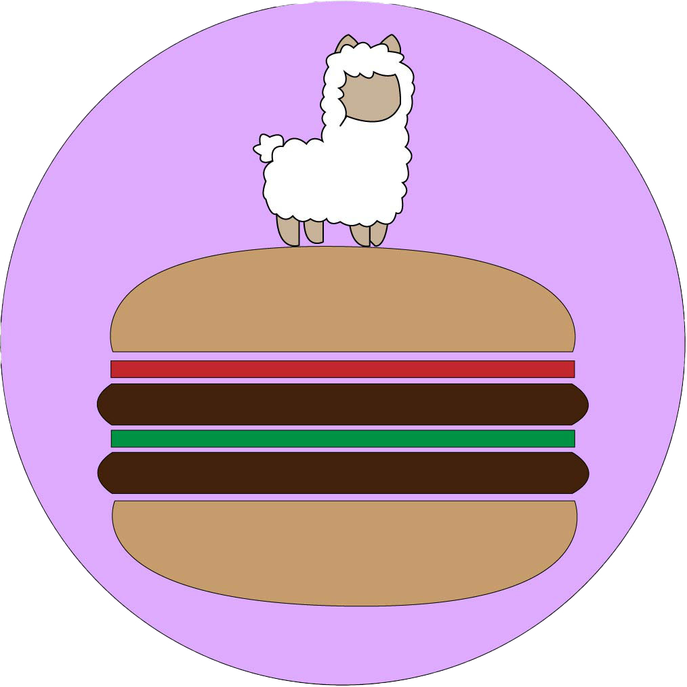
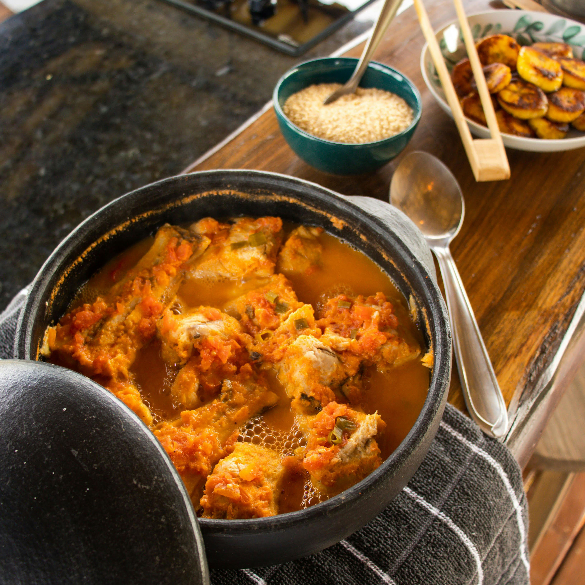

Back in the late 1980s, in a dusty roadside town somewhere between desert highways and mountain trails, two longtime friends—Carlos “Taco” Alvarez and Ben “Burger” Parker—ran competing food stands across the street from each other. Carlos made the best street tacos anyone had ever tasted—slow-cooked meats, handmade tortillas, and family recipes passed down for generations. Ben, on the other hand, was known for his thick, juicy burgers stacked high with creative toppings and homemade sauces. Locals were fiercely divided. You were either “Team Taco” or “Team Burger,” and switching sides was practically a betrayal. One scorching summer day, business slowed to a crawl. Out of boredom (and a little stubborn pride), Carlos shouted across the street, “Your burgers wouldn’t last a day in my kitchen!” Ben fired back, “At least my food needs two hands to eat!” The crowd gathered, sensing something brewing. That’s when a traveler passing through—a quiet, curious woman known only as “Alpa”—stepped in. She proposed a challenge: combine their best dishes into something completely new. One menu. One stand. No egos. At first, they laughed it off. Then, reluctantly, they agreed.

Alpaco Taco Burger
The Saturn Burger is back!
Now with less spider legs?!
Limited time

Croistant
A croistant is a warm, flaky pastry with a golden, buttery crust and soft, airy layers inside, perfect for breakfast or a quick, satisfying snack.
Limited time

QCC
QCC are crispy, bite-sized pieces with bold flavor and a slightly mysterious edge—perfectly seasoned, oddly satisfying, and best enjoyed when you’re feeling a little adventurous.
Limited time
